265 — Ruta Cloud Engineer y mapa de competencias
Parte: 22 — Especializaciones, certificaciones y práctica profesional
Nivel: intermedio-avanzado · Horas estimadas: 4
Laboratorio: decision · Estado: EXECUTABLE_CORE
🎯 Propósito
Dar el mapa de competencias que ordena la parte 22 y la ruta base de la que salen todas las demás. La clase separa lo que hay que saber de lo que hay que saber hacer, distingue las competencias atadas a un producto de las atadas a una restricción —que son las que duran—, y da el método para evaluarse sin engañarse: por lo que uno ha resuelto, no por lo que ha leído.
📚 Resultados de aprendizaje
Al finalizar podrás:
- Distinguir competencias de producto y competencias de restricción.
- Situar las ocho rutas de la parte 22 en un mapa común.
- Evaluar el nivel propio por evidencia y no por familiaridad.
- Construir un plan de aprendizaje con hueco identificado y prueba.
- Reconocer el techo de cada ruta y qué lo levanta.
🧩 Conceptos centrales
| Concepto | Comprensión verificable |
|---|---|
competencia de restricción |
Saber que se organiza alrededor de un límite del mundo: latencia, coherencia, coste, superficie de ataque. Sobrevive a los productos. |
competencia de producto |
Saber cómo se hace algo en un servicio concreto. Caduca con él. |
nivel por evidencia |
Lo que uno ha resuelto sin ayuda, con las consecuencias delante. La única medida honesta. |
ilusión de familiaridad |
Confundir haber leído o visto algo con saber hacerlo. |
ruta |
Combinación de competencias que un puesto exige. No es una identidad: es un reparto de énfasis. |
techo de ruta |
El límite al que se llega sin adquirir competencias de otra ruta. |
🧠 Modelo mental
Una especialización combina fundamentos, evidencia de proyectos y juicio bajo restricciones; una insignia sin práctica no sustituye esa combinación.
Aplicado a esta clase, separa siempre cuatro planos: intención (qué necesita el usuario), configuración (qué declaramos), estado observado (qué existe de verdad) y evidencia (cómo sabemos que cumple). Confundirlos produce diseños que se ven correctos en un diagrama pero fallan al operar.
🗺️ Flujo de razonamiento

📖 Desarrollo
1. Restricción frente a producto
La distinción que ordena una carrera entera: hay saberes que caducan con el servicio que los origina y saberes que no.
COMPETENCIA DE PRODUCTO
cómo se configura un balanceador en la nube X
qué nombre tiene el servicio de colas en la nube Y
qué campos lleva una política en la nube Z
→ se aprende en días si la base está
→ caduca cuando el producto cambia
→ y es lo que más ocupa en los temarios
COMPETENCIA DE RESTRICCIÓN
por qué la latencia entre regiones limita la coherencia
clases 183, 187
por qué un reintento sin retroceso multiplica la carga
clase 201
por qué el coste se decide al diseñar ley 14
por qué un permiso amplio es una decisión de riesgo
clase 231
por qué una cola cambia dónde está la garantía ley 18
→ no caduca, porque la restricción no depende del
producto
→ un producto nuevo es otra forma de encajar el mismo
límite
Y la consecuencia práctica, que es lo que cambia decisiones:
QUIEN SABE LA RESTRICCIÓN APRENDE EL PRODUCTO EN DÍAS
QUIEN SABE EL PRODUCTO NO DEDUCE LA RESTRICCIÓN NUNCA
→ y por eso este programa ha enseñado por restricción y
ha usado los tres proveedores como ejemplos
→ y por eso la parte 19 pudo comparar las tres nubes
midiendo, en vez de listando
Y las cinco restricciones que estructuran todo lo demás:
1 LA DISTANCIA
la luz tarda; y de ahí salen latencia, coherencia,
regiones, réplicas y conmutación
2 EL FALLO PARCIAL
las cosas fallan a medias y lento, no del todo
→ y de ahí, plazos, reintentos, cortacircuitos y
degradación clases 185, 201
3 LA IDENTIDAD
todo acceso es una afirmación que hay que verificar
→ y de ahí, autenticación, autorización, privilegio
mínimo y auditoría clase 231
4 EL COSTE POR USO
cada operación se factura
→ y de ahí, arquitectura, formatos, y la ley 28
5 Y EL CAMBIO
los sistemas cambian y las personas olvidan
→ y de ahí, inventario, procedimientos, ensayos y la
parte 21 entera
2. El mapa de competencias
Ocho rutas y una base común. Y el error de leerlo como ocho identidades excluyentes.
LA BASE COMÚN, que ninguna ruta puede saltarse
redes: rutas, nombres, plazos, camino esperado
clases 194, 195, 202
identidad: quién es y qué puede clase 231
datos: dónde están, quién los copia, qué se pierde
clases 189, 208
coste: cómo se genera y quién responde clases 220, 270
operación: alertas, procedimientos, cambio parte 21
→ y quien no tiene esta base opera de oídas en cualquier
ruta
LAS OCHO RUTAS, por lo que priorizan
cloud engineer construir y sostener servicios
devops y entrega que el cambio llegue rápido y
seguro clase 266
plataforma que otros equipos vayan solos
clase 267
fiabilidad que el sistema cumpla lo
prometido clase 268
seguridad que el fallo no sea catastrófico
clase 269
coste que el gasto sea una decisión
clase 270
datos e IA que el dato sea confiable
clase 271
arquitectura que la decisión sea defendible
clase 272
→ y todas comparten la base; se diferencian en el ÉNFASIS
→ y nadie ocupa una sola casilla en la práctica
Y los cuatro niveles, definidos por lo que uno puede hacer solo:
NIVEL 1 · SIGO
ejecuto un procedimiento existente y sé cuándo pedir
ayuda
NIVEL 2 · RESUELVO
diagnostico y arreglo problemas conocidos sin ayuda
y escribo el procedimiento que faltaba
NIVEL 3 · DISEÑO
tomo decisiones con compromisos y las defiendo con
cifras
y anticipo el modo de fallo antes de que ocurra
NIVEL 4 · CAMBIO EL SISTEMA
cambio cómo trabaja la organización, no solo el sistema
y el efecto se mide en otros equipos
→ y el salto de 2 a 3 es el que más gente no da
→ porque el nivel 2 se alcanza practicando y el 3 exige
equivocarse con consecuencias y revisarlo
3. Evaluarse sin engañarse
La autoevaluación por familiaridad es inútil y es la que todo el mundo hace.
LA ILUSIÓN DE FAMILIARIDAD
«sé de balanceadores» significa, casi siempre,
«he leído sobre balanceadores»
→ leer produce reconocimiento, no capacidad
→ y el reconocimiento se siente igual que saber
LA PRUEBA QUE LO DESHACE
«¿cuándo lo hiciste sin ayuda?»
«¿qué salió mal y cómo lo supiste?»
«¿qué decidirías distinto ahora?»
→ si no hay respuesta a las tres, el nivel es 1
→ y esto duele, y es útil
Y la rejilla de autoevaluación, que se rellena con evidencia:
por cada competencia
¿lo he hecho? sí / no
¿solo o acompañado?
¿en producción o en un ejercicio?
¿qué salió mal?
¿qué mide que salió bien?
→ y si la respuesta a «¿qué salió mal?» es «nada», casi
siempre significa que el ejercicio era pequeño
→ los ejercicios que no fallan no enseñan clase 261
Y cómo se construye el plan a partir del hueco:
1 ELIGE UNA RESTRICCIÓN, no un producto
«no sé razonar sobre coherencia entre regiones»
→ mejor que «no sé el servicio X»
2 BUSCA UN PROBLEMA REAL
en tu sistema, en un proyecto propio o en un ejercicio
con consecuencias medibles
3 ESCRIBE LA HIPÓTESIS ANTES
qué crees que va a pasar
→ el mismo método que este programa aplica cada parte
4 MIDE
y compara con lo que creías
5 ESCRÍBELO
→ y ahí tienes evidencia para el portafolio
clase 275
→ y este ciclo, repetido, es lo que produce el nivel 3
→ leer más contenidos no lo produce nunca
4. La ruta de ingeniería de nube y su techo
La ruta base: construir y sostener servicios en la nube. Es donde casi todo el mundo empieza y donde muchos se quedan por una razón concreta.
QUÉ HACE
aprovisiona y mantiene infraestructura
monta redes, cómputo, almacenamiento y bases
automatiza con infraestructura como código clase 128
responde de que funcione
LO QUE SE ESPERA POR NIVEL
nivel 1 ejecuta cambios definidos por otros
nivel 2 diseña y monta un servicio completo, con red,
identidad, copias y señales
nivel 3 decide entre alternativas con coste y riesgo
medidos, y lo defiende
nivel 4 define cómo se construye en la organización
LAS COMPETENCIAS QUE MÁS SE MIDEN
redes: por qué no llega el tráfico clases 194-202
identidad y permisos clase 231
infraestructura como código, con estado y módulos
clases 128, 232
copias y restauración probada clase 255
coste al diseñar clase 220
y diagnóstico clase 258
Y el techo, que es lo importante de esta clase:
EL TECHO DE LA RUTA BASE
se llega a construir bien lo que a uno le piden
→ y ahí se para
y lo que lo levanta NO es más profundidad técnica
es una de estas tres
a saber decidir entre opciones y defenderlo
→ ruta de arquitectura clase 272
b hacer que otros vayan más rápido
→ ruta de plataforma clase 267
c responder de una propiedad del sistema entero
→ fiabilidad, seguridad o coste
clases 268, 269, 270
→ y ninguna de las tres es «saber más servicios»
→ el hueco entre nivel 2 y 3 es de JUICIO, no de catálogo
→ que es exactamente lo que la ley 30 dijo de los
procedimientos: lo que falta no es el paso, es la
decisión clase 264
Y el consejo que más cambia trayectorias:
ESPECIALIZARSE EN UNA NUBE A FONDO Y APRENDER A TRADUCIR
→ mejor que las tres por encima
→ porque la profundidad en una enseña la restricción,
y la restricción se traduce clase 273
→ y quien sabe las tres por encima no ha visto ninguna
fallar de verdad
y la trampa del currículo
listar veinte servicios no dice nada
→ lo que dice algo es «reduje el tiempo de recuperación
de 47 a 11 minutos y así lo medí» clase 275
Y la lista de comprobación de la clase:
☐ sé distinguir qué de lo que sé es producto y qué es
restricción
☐ tengo la base común, no solo la parte que uso
☐ mi nivel lo he fijado por evidencia, no por familiaridad
☐ por cada competencia puedo decir qué salió mal alguna vez
☐ mi plan parte de una restricción, no de un producto
☐ tengo un problema real donde practicarla
☐ escribo la hipótesis antes y la comparo después
☐ sé cuál es el techo de mi ruta y qué lo levanta
☐ tengo una nube a fondo antes que tres por encima
☐ mis logros están escritos con cifras, no con servicios
Y el cierre que enlaza con la clase siguiente: la primera especialización que sale de la base es la que se ocupa de que el cambio llegue a producción rápido y sin romper. Entrega continua y su ruta es la materia de la clase 266.
🔬 Ejemplo trabajado
Tres autoevaluaciones reales del equipo de CloudShop, hechas con la rejilla por evidencia. Lo que sigue es lo que la rejilla dijo frente a lo que cada persona creía, y el plan que salió de ahí.
Persona A · Cuatro años de experiencia. Se creía nivel 3.
autoevaluación inicial, por familiaridad
redes «alto»
identidad «alto»
infraestructura como código «alto»
copias «medio»
coste «medio»
diagnóstico «alto»
y la rejilla por evidencia
¿solo? ¿producción? ¿qué falló?
redes sí sí nada
identidad sí sí nada
infraestructura
como código sí sí «un estado
corrupto»
copias no - -
coste no - -
diagnóstico sí sí «tardé 3 h
en un caso»
Y la conversación que lo cambió:
«¿qué falló en redes?» «nada»
«¿has visto una asimetría de rutas?» no
«¿has diagnosticado un problema de
unidad máxima de transmisión?» no
«¿has visto un nombre resolver distinto
según desde dónde se pregunte?» no
→ nivel real en redes: 2, no 3
→ había construido muchas redes y no había roto ninguna
→ y el nivel 3 exige haber visto fallar
y en copias, el hallazgo
«las copias las configuré yo»
«¿has restaurado alguna?» no
→ nivel 1, no medio ley 22
Y el plan que salió:
restricción elegida el fallo parcial
problema real los ensayos de la clase 261
hipótesis escrita «al añadir 200 ms, el flujo se
degradará proporcionalmente»
resultado 4.100 ms; hipótesis refutada
→ y esa refutación produjo más aprendizaje que dos años
construyendo redes que funcionaban
→ nivel en redes y en fallo parcial, 12 meses después: 3
Persona B · Once meses. Se creía nivel 1 en todo.
la rejilla dio otra cosa
¿solo? ¿producción? ¿qué falló?
diagnóstico sí sí «seguí una
hipótesis
falsa 2 h»
procedimientos sí sí «el mío
estaba mal
escrito y
otro no lo
entendió»
copias sí sí «restauré y
faltaban
40 min»
→ nivel 2 en tres competencias
→ y nivel 1 en redes e identidad, correctamente
→ había hecho MENOS cosas y las había hecho fallar
→ que es lo que produce nivel
Y lo que esto reveló del equipo:
quien lleva menos tiempo suele tener MEJOR calibrada la
autoevaluación
→ porque recuerda cuándo pidió ayuda
y quien lleva más tiempo confunde antigüedad con nivel
→ porque ha visto muchas veces lo mismo funcionar
→ la rejilla por evidencia corrige a los dos
Persona C · Ocho años. Nivel 3 real, con techo.
la rejilla confirmó nivel 3 en casi todo
decide entre alternativas con cifras sí
anticipa modos de fallo sí
defiende decisiones ante negocio sí
y la pregunta del techo
«¿cuál fue tu último trabajo que cambió cómo trabaja
otro equipo?»
→ ninguno en dos años
→ nivel 3 estable, techo alcanzado
→ y su queja era «no avanzo, y ya sé más que nadie de esto»
→ que es el síntoma exacto del techo de la ruta base
Y las tres salidas que se le plantearon, con lo que cada una exigía:
a ARQUITECTURA clase 272
lo que le falta: defender ante un panel que no es
técnico, y escribir decisiones para que sobrevivan
a su autor
b PLATAFORMA clase 267
lo que le falta: tratar a otros equipos como clientes
y medir adopción, no calidad interna
c FIABILIDAD clase 268
lo que le falta: responder de un número acordado con
negocio, y decir que no a un despliegue
eligió (b)
y a los 9 meses, su medida era otra
equipos que despliegan solos 3 → 14
tiempo de un servicio nuevo 3 semanas → 2 días
→ el mismo conocimiento técnico, otro efecto
→ y eso es lo que distingue el nivel 4
Y la comparación agregada del equipo, 9 personas.
```text autoevaluación evidencia redes media 2,9 media 2,1 identidad 2,7 1,9 infraestructura como código 3,1 2,6 copias y restauración 2,4 1,2 coste 2,2 1,1 diagnóstico 2,8 2,3 operación 2,6 1,8
→ el hueco es mayor donde la práctica es más rara → copias y coste son los peores, y no es casualidad: son los que solo se practican cuando algo va mal → y la parte 21 lo confirmó: la restauración real tardó 3 h 10 frente a los 40 minutos que todos creían
Y lo que el equipo hizo con esa tabla:
```text
no se usó para evaluar a nadie
→ se usó para decidir qué ensayar
→ y los ensayos de la clase 261 se ordenaron por el
hueco más grande
12 meses después
copias y restauración 1,2 → 2,4
coste 1,1 → 2,0
y el tiempo de restauración medido 3 h 10 → 52 min
→ la rejilla no midió el aprendizaje: lo dirigió
La lección que esta clase deja: la persona con cuatro años se creía nivel 3 en redes porque nunca había visto una fallar, y la de once meses tenía nivel 2 real en tres competencias porque las había roto. Y el hueco entre autoevaluación y evidencia era mayor justo en copias y coste, que son las dos competencias que solo se practican cuando algo va mal.
🧪 Laboratorio guiado
Ejecuta desde la raíz:
python classes/part-22-specializations-certifications-career/265-ruta-cloud-engineer-y-mapa-de-competencias/lab.py
El laboratorio selecciona el motor de práctica decision y produce
lab_result.json. El escenario, sus comprobaciones y el artefacto esperado corresponden a
esta clase; no requiere credenciales y deja explícito qué debe revalidarse en un sandbox real.
- Lee
exercise.stepsy formula una predicción antes de ejecutar. - Ejecuta la práctica y verifica todos los elementos de
checks. - Provoca el caso de
negative_testy explica la señal observada. - Materializa
cloud-engineer-planenevidence/usando la plantilla indicada. - Para proveedor real, sigue
sandbox.requires, registra costo y ejecutadestroy.
Evidencia esperada
El artefacto principal es una matriz de decisión ponderada y un ADR. Además, la entrega debe incluir el comando ejecutado, la salida estructurada y una conclusión que no exceda lo observado.
🏆 Reto verificable
Construye cloud-engineer-plan para el caso CloudShop. Incluye una alternativa descartada,
un supuesto que pueda falsarse, una prueba de fallo y una decisión de rollback.
✅ Criterio de aceptación
- [ ]
lab.pytermina con código 0 y genera JSON válido. - [ ] La entrega conecta al menos tres requisitos con mecanismos verificables.
- [ ] Existe una prueba positiva y una prueba negativa con evidencia.
- [ ] Seguridad, costo y operación aparecen como decisiones, no como anexos.
- [ ] Se declara una limitación y una condición que obligaría a revisar el diseño.
- [ ] Otra persona puede repetir el recorrido sin conocimiento tácito.
⚠️ Errores frecuentes
| Síntoma | Causa probable | Corrección |
|---|---|---|
| Se estudia mucho y el nivel no sube | Leer produce reconocimiento, no capacidad; la familiaridad se confunde con saber | Por cada competencia responde qué hiciste solo, qué salió mal y qué harías distinto; si no hay respuesta, el nivel es 1. |
| Se conocen tres nubes y no se resuelve bien en ninguna | La amplitud sin profundidad no enseña la restricción, que es lo que se traduce | Domina una nube hasta haberla visto fallar y luego traduce; la restricción es transferible, la sintaxis se aprende en días. |
| Se llega a construir bien y la carrera se estanca | Es el techo de la ruta base; no se levanta con más servicios sino con juicio o alcance | Elige entre decidir y defender, hacer que otros vayan más rápido, o responder de una propiedad del sistema entero. |
| El currículo lista veinte servicios y no consigue entrevistas técnicas buenas | Una lista de productos no demuestra capacidad de resolver | Escribe logros con cifra y método: qué medías antes, qué cambiaste y qué mide que funcionó. |
| La autoevaluación del equipo no coincide con lo que ocurre en incidentes | Se evaluó por antigüedad y familiaridad, no por evidencia | Usa la rejilla por evidencia y ordena los ensayos por el hueco mayor; suele estar en copias y coste. |
| Un ejercicio de práctica salió perfecto y no se aprendió nada | El ejercicio era demasiado pequeño para fallar | Escoge problemas con consecuencias medibles y escribe la hipótesis antes; lo que no falla no enseña. |
🛡️ Seguridad, ética y costo
Trabaja con cuentas propias o sandboxes autorizados. No publiques secretos, identificadores reales ni datos personales. Antes de crear recursos pagos define presupuesto, etiquetas y comando de destrucción; después verifica que no queden recursos huérfanos. Los ejemplos locales enseñan contratos, pero no certifican cumplimiento ni disponibilidad de producción.
❓ Preguntas de comprobación
- ¿Qué distingue una competencia de restricción de una de producto?
- ¿Cuáles son las cinco restricciones que estructuran el resto?
- ¿Cómo se fija el nivel propio sin caer en la ilusión de familiaridad?
- ¿Qué separa el nivel 2 del nivel 3 y por qué es el salto que menos gente da?
- ¿Cuál es el techo de la ruta base y qué tres cosas lo levantan?
🔗 Referencias
- Ericsson, K. A. y Pool, R. (2016). Peak: secrets from the new science of expertise. https://www.hachettebookgroup.com/titles/anders-ericsson/peak/9780544456259/
- Dreyfus, S. (2004). The five-stage model of adult skill acquisition. https://journals.sagepub.com/doi/10.1177/0270467604264992
- AWS (2024). Skills and certification paths. https://aws.amazon.com/training/learn-about/
- Microsoft (2024). Azure career and skills paths. https://learn.microsoft.com/credentials/browse/
- Google Cloud (2024). Cloud learning paths by role. https://cloud.google.com/learn/training
- Documentación oficial vigente del servicio implementado; registra URL y fecha de consulta.
📥 Descargar: Parte 22 en PDF · Manual integral